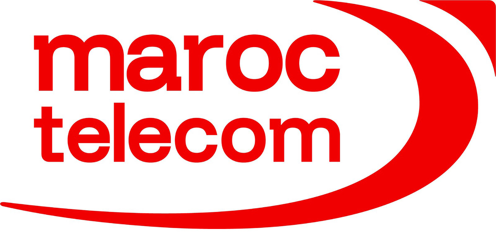
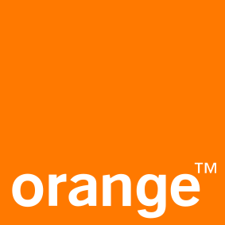

Data Scientist avec une double compétence Data Science et SIG. Je transforme les données complexes, spatiales ou non, en insights stratégiques et en solutions prédictives. Aujourd'hui Ingénieur Projet Data & Géodata Science chez Maroc Telecom.
Data Scientist et Data Analyst, ingénieure diplômée de l'EHTP, je fais parler les données pour éclairer la décision. Ma démarche est analytique avant tout : poser la bonne question métier, explorer et nettoyer les données, mesurer, tester des hypothèses, puis modéliser pour prédire et recommander. La dimension géospatiale vient enrichir cette analyse d'un contexte « où » que peu de profils data maîtrisent.
Chez Orange Maroc, à l'Agence Urbaine, chez Zine Capital Invest et aujourd'hui chez Maroc Telecom, j'ai conduit des projets data de bout en bout : collecte et extraction (SQL, Web Scraping, données internes et crowdsourcées), analyse exploratoire et statistique (Python, Pandas), feature engineering et modélisation prédictive (Scikit-learn, XGBoost, TensorFlow, PyTorch), jusqu'au suivi des KPIs et à la restitution dans des dashboards interactifs (Power BI, Tableau). Une démarche consolidée par le programme Data Science d'ALX.
Mon objectif : transformer chaque jeu de données en insights actionnables et en modèles fiables, pour que les décisions, qu'elles soient réseau, commerciales, marketing ou logistiques, reposent sur des chiffres plutôt que sur l'intuition, et créent une valeur mesurable.
Ingénieur Projet Data & Géodata ScienceMaroc Telecom · depuis août 2025
Analyse de données & Machine LearningPython · SQL · Statistiques · Scikit-learn · Power BI
Ingénieure d'État, EHTPSciences de l'information géographique
Arabe, Français, AnglaisNatif AR · Bilingue FR · Anglais intermédiaire
Parcours
Expérience professionnelle
Des télécoms à l'urbanisme : un fil conducteur, la donnée géospatiale au service de la décision.

Ingénieur Projet Data & Géodata Science
Maroc Telecom
Depuis Août 2025 Rabat, MA
Gestion de projets Data / Réseau / SIG : pilotage des projets, coordination des équipes et parties prenantes, suivi des processus et des délais.
Reporting & suivi de la performance : élaboration de reportings managériaux et fonctionnels, suivi des KPIs et analyse de l'activité.
Projets Data Science : collecte, traitement et analyse des données, développement de modèles prédictifs et valorisation des données.
Géodata / SIG & géomarketing : analyse spatiale, prédiction des zones à fort potentiel de gain, visualisation des zones de congestion réseau, analyse de la QoS et des couvertures fixes et mobiles, cartographie et aide à la décision.
PythonData AnalysisWeb ScrapingPower BIQGIS

Stagiaire en Data Science, PFE
Orange Maroc
Fév 2025 — Juil 2025 Casablanca, MA
Smart Capacity 4G : intégration des SIG et de la data science pour l'optimisation des sites et le tuning réseau
Solution combinant data science et SIG, exploitant trois sources de données : internes, géographiques et crowdsourcées.
Détection des zones 4G congestionnées et analyse des données pour identifier les leviers d'optimisation.
Recommandation d'actions correctives ciblées sur les sites 4G : MIMO, reparamétrage, ajout capacitaire / site.
PythonMachine LearningWeb ScrapingPower BIQGIS
Stagiaire en Data Science
Orange Maroc
Juil 2024 — Août 2024 Casablanca, MA
Prédiction des zones géographiques pour le déploiement de nouveaux sites télécoms
Modèle de machine learning prédisant les zones géographiques optimales pour le déploiement de nouveaux sites télécoms.
Estimation du potentiel de gain en trafic dans ces zones.
PythonMachine LearningWeb ScrapingQGIS
Stagiaire en Analyse SIG
Agence Urbaine
Août 2023 Berrechid, MA
Analyse et évaluation de la mise en œuvre du plan d'aménagement de Benslimane, homologué en 2017
Élaboration de cartes et de données statistiques pour suivre l'avancement du plan d'aménagement.
Évaluation de la mise en œuvre des équipements et des projets prévus par le plan.
La gestion des données urbaines, African Cities Lab · UM6P (2023)
Digital Image Processing with OpenCV in Python
Langues
Arabe · langue natale
Français · bilingue
Anglais · intermédiaire
Engagement
Activités parascolaires
Vie associative à l'EHTP et réseau JADARA Foundation.
Directrice Design
Club Hassania Géo-IT · EHTP
2023 — 2024
Responsable de l'identité visuelle du club : conception des supports de communication et des visuels des événements, et coordination de l'équipe design.
Membre du réseau des anciens boursiers de la Fondation JADARA, qui accompagne des étudiants méritants tout au long de leur parcours académique et professionnel.
Moments forts
Khaoula AADIA
JADARA
J’ai eu l’honneur de participer à la journée d’intégration et de gratitude organisée par JADARA (ONG), un moment riche en partage, en émotions et en inspiration.
Cette rencontre a été l’occasion de célébrer notre réussite, de remercier chaleureusement toutes celles et ceux qui nous ont accompagnés dans nos parcours, et de reconnaître l’engagement et le soutien qui nous ont permis d’avancer.
Ainsi, accueillir les nouveaux bénéficiaires a été un vrai privilège : les guider, les encourager et partager quelques clés pour la suite, c’est cela qui donne du sens à notre réussite collective.
Khaoula AADIA
JADARA
Il y a quelques jours, j'ai eu l'honneur de représenter JADARA (ONG) lors du Forum International de l'Étudiant, qui s'est tenu du 10 au 13 avril à la Foire Internationale de Casablanca. Une belle occasion de rencontrer, d'échanger et d'inspirer les participants.
Faire partie de JADARA et incarner ses valeurs est, et restera toujours une grande source de fierté pour moi.
Khaoula AADIA
Visite
Last week, I had the chance to visit Leyton, and it was a great experience.
We discovered the world of consulting and got valuable insights into how things work in the field.
Khaoula AADIA
Hassania Geo-IT
Le 15 novembre à l'École Hassania des Travaux Publics, en tant que membre du bureau du club Hassania Geo-IT, j'ai plongé au cœur de l'organisation d'un anniversaire des Sciences de l'Information Géographique (SIG) inoubliable organisé par le club en collaboration avec la société Geomatic. De la conférence inspirante au hackathon électrisant, chaque moment a été un voyage d'idées révolutionnaires dans le domaine des Smart cities 🏙️.
Moi et Imane Belhafiane avons collaborativement animé l'après-midi, stimulant la créativité et l'innovation à son apogée. Un immense merci à tous les esprits brillants présents, votre énergie a fait de cet événement une pépinière d'innovation ! C'était bien plus qu'une célébration ; c'était un élan vers le futur des SIG 🌍, et je suis fière d'avoir contribué en tant que membre du bureau de Hassania Geo-IT.
Khaoula AADIA
Hassania Geo-IT
Design Manager at Hassania Geo-IT Club!
Veille & partage
Publications Tech
GeoAI, vision par ordinateur, collecte de données, analyse multicritère et géomarketing : ce que je partage sur la data et les SIG.
Khaoula AADIA
GeoAI
🌍 Attending Esri's webinar on "Understanding GeoAI in ArcGIS" today was truly inspiring. The integration of spatial analysis, data science, Python, and AI is revolutionizing the way we address geospatial challenges.
GeoAI is making it possible to harness the power of AI and machine learning within GIS, allowing us to analyze vast datasets, automate workflows, predict outcomes, and make informed decisions more efficiently than ever.
Khaoula AADIA
Computer Vision
Object identification in GIS using computer vision and pre-trained deep learning models revolutionizes spatial analysis. By applying these techniques to satellite or aerial images, we can quickly and accurately detect specific elements, such as palm trees 🌴, enabling more effective resource management and better decision-making. This technological advancement demonstrates the power of computer vision in processing and interpreting geospatial data.
Khaoula AADIA
Data
Three Essential Methods for Data Collection
Data is the new oil, and knowing how to collect it effectively is essential for making informed and strategic decisions. Here are three key methods to gather data:
Crowdsourcing 📄 : This method gathers information directly from users through surveys and questionnaires, providing diverse and up-to-date data. Tools like Amazon Mechanical Turk and Google Forms can be used to organize and manage user contributions.
Web Scraping 🌐 : This technique extracts public data from websites, compiling valuable information from multiple online sources. Tools like Beautiful Soup and Scrapy in Python are ideal for performing this type of data collection automatically.
Using Site APIs ⚙️ : Accessing structured data provided by platforms ensures smooth and often real-time integration. Libraries like Requests in Python and tools like Postman make connecting to and extracting data from APIs straightforward.
Khaoula AADIA
SIG & AHP
À la recherche de l'emplacement idéal pour ouvrir votre prochain restaurant ? 🍽️ Vous savez que le succès de votre entreprise dépend en grande partie de son emplacement stratégique ; c'est là que l'analyse multicritère et les SIG entrent en jeu pour vous aider à prendre des décisions éclairées.
Imaginez pouvoir évaluer différentes localisations en fonction de critères clés tels que la population environnante, la proximité des routes principales, la distance par rapport aux restaurants existants, aux hôtels et à la zone industrielle. C'est exactement ce que j'ai fait dans ma récente étude d'analyse multicritère pour recommander l'emplacement optimal pour un restaurant.
En utilisant des techniques de poids, de scoring et de classification et la méthode AHP, j'ai cartographié ces critères essentiels pour identifier les zones les plus prometteuses. Que vous cherchiez à maximiser votre clientèle potentielle, à minimiser la concurrence ou à optimiser l'accessibilité, l'analyse multicritère et les SIG offrent des insights pour guider votre prise de décision.
Les SIG et le Géomarketing… Clés du Succès Commercial ! 📢
Dans le paysage dynamique du marketing moderne, le géomarketing s'érige en pilier fondamental. Imaginez pouvoir décrypter les comportements des consommateurs en fonction de leurs emplacements géographiques ! Une révolution, n'est-ce pas ? Et c'est là que les Systèmes d'Information Géographique (SIG) entrent en jeu, en tant qu'outils essentiels pour collecter, analyser et cartographier ces précieuses données spatiales.
🎯 Analyse de la Localisation des Clients : Les SIG sont comme des cartographes modernes, traçant les empreintes numériques laissées par vos clients. Cette cartographie intelligente révèle des zones de clients potentiels, guidant ainsi l'ouverture de nouvelles succursales aux emplacements optimaux pour une visibilité maximale.
🗺️ Segmentation de la Clientèle : Grâce aux SIG, les entreprises ne voient plus leurs clients comme une masse uniforme. Ces systèmes permettent la segmentation fine de la clientèle en fonction de données démographiques et comportementales. Le résultat ? Des campagnes marketing qui parlent directement à chaque segment, améliorant considérablement l'efficacité et l'impact.
🔍 Analyse de la Concurrence : Visualiser les emplacements de vos concurrents et leurs emprises géographiques est comme avoir un regard dans l'arène concurrentielle. Les SIG révèlent les zones de concurrence intense et celles qui sont des terrains inexplorés. Une vue panoramique qui informe les stratégies à adopter pour maximiser votre portée.
🚚 Optimisation de la Logistique : Les SIG optimisent également la logistique en analysant les distances, les routes et les contraintes géographiques. En réduisant les trajets inefficaces, les entreprises économisent des coûts opérationnels tout en garantissant des délais de livraison plus rapides et des clients satisfaits.
📊 L'Évidence des Données Visuelles : Les chiffres parlent d'eux-mêmes : les représentations visuelles sont des piliers du géomarketing. Les images amplifient les vues de 94% et les données visuelles sont retenues jusqu'à 65%, contre seulement 10% pour le texte seul. Les articles avec des images génèrent 650% de retweets en plus. De plus, 82% des utilisateurs de smartphones prennent des décisions influencées par des informations géo-spatiales. Dans cet univers visuel, 69% des entreprises considèrent les cartes comme essentielles, et il est intéressant de noter que 80% des données commerciales ont une composante géospatiale. Les cartes sont ainsi devenues des alliées indispensables et pertinentes pour simplifier des informations complexes et orienter les décisions éclairées en géomarketing.
C'est donc le moment de penser géographiquement et d'utiliser la force de la localisation.
Contact
Travaillons ensemble.
Ouverte aux échanges sur des projets SIG, data science et gestion de projets IT.